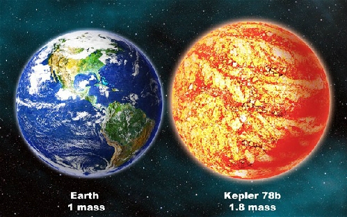
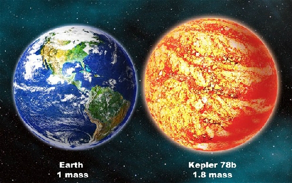

The most asked question
How many planets does the solar system have?
Is the earth the center of the universe?
What is the temperature of the planets?
Tags
Extrasolar Planet
Extrasolar planet, also called exoplanet, any planetary body that is outside the solar system and that usually orbits a star other than the Sun. Extrasolar planets were first discovered in 1992. More than 5,000 are known, and almost 9,000 await further confirmation.
Detection of extrasolar planets
Because planets are much fainter than the stars they orbit, extrasolar planets are extremely difficult to detect directly. By far the most successful technique for finding and studying extrasolar planets has been the radial velocity method, which measures the motion of host stars in response to gravitational tugs by their planets. Swiss astronomers Michel Mayor and Didier Queloz discovered the first planet using this technique, 51 Pegasi b, in 1995. (Mayor and Queloz won the 2019 Nobel Prize in Physics for their discovery.) Radial velocity measurements determine the sizes and shapes of the orbits of extrasolar planets as well as the lower limits of the masses of these planets. (They provide only lower limits on planetary mass because they measure just the portion of the star’s motion toward and away from Earth.)
A complementary technique is transit photometry, which measures drops in starlight caused by those planets whose orbits are oriented in space such that they periodically pass between their stars and the telescope; transit observations reveal the sizes of planets as well as their orbital periods. Radial velocity data can be combined with transit measurements to yield precise planetary masses as well as densities of transiting planets and thereby limit the possible materials of which the planets are composed. Spectroscopic studies that rely on variations in the depth of the transit with wavelength have been used to identify gases such as water, hydrogen, sodium, and methane in the upper atmospheres of some close-in giant planets. The first detected transiting planet was HD 209458b in 1999. Both radial velocity and transit techniques are most sensitive to large planets orbiting close to their stars.
Three other techniques that have detected extrasolar planets are pulsation timing, microlensing, and direct imaging. Pulsation timing measures the change in distance between the signal source and the telescope by using the arrival times of signals that are emitted periodically by the source. When the source is a pulsar (a rotating, magnetized neutron star), current technology can detect motions in response to a planet whose mass is as small as that of Earth’s Moon, whereas only giant planets can be detected around pulsating normal stars. The first extrasolar planets to be discovered were found in 1992 around the pulsar PSR 1257+12 by using this method. Microlensing relies upon measurements of the gravitational bending of light (predicted by Albert Einstein’s general theory of relativity) from a more distant source by an intervening star and its planets. This technique is most sensitive to massive planets orbiting hundreds of millions of kilometres from their star and has also been used to discover a population of free-floating giant planets that do not orbit any star. Direct imaging can be done by using starlight reflected off the planet or thermal infrared radiation emitted by the planet. Imaging works best for planets orbiting those stars that are nearest to the Sun, with infrared imaging being especially sensitive to young massive planets that orbit far from their star.
Almost all of the planets detected so far are within the Milky Way. However, there is evidence that extragalactic planets, exoplanets farther away in galaxies beyond the local Milky Way galaxy, may exist. The nearest exoplanets are located 4.2 light-years (1.3 parsecs) from Earth and orbit Proxima Centauri, the closest star to the Sun.
The discovery of exoplanets has intensified interest in the search for extraterrestrial life. There is special interest in planets that orbit in a star's habitable zone (or sometimes called "goldilocks zone"), where it is possible for liquid water, a prerequisite for life as we know it, to exist on the surface. However, the study of planetary habitability also considers a wide range of other factors in determining the suitability of a planet for hosting life.
Rogue planets are those that do not orbit any star. Such objects are considered a separate category of planets, especially if they are gas giants, often counted as sub-brown dwarfs. The rogue planets in the Milky Way possibly number in the billions or more.